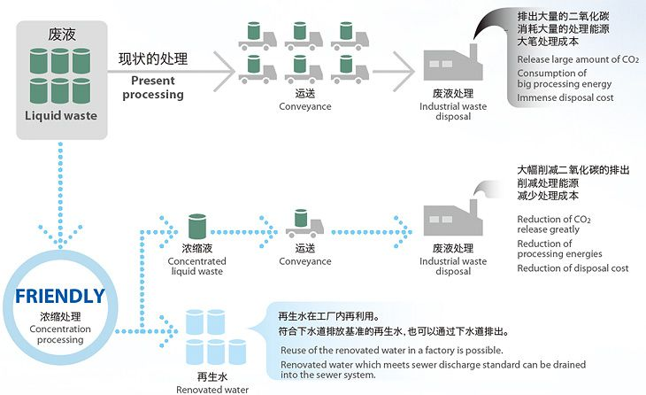
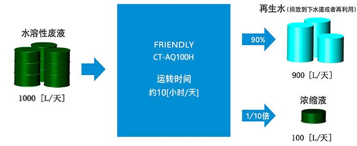
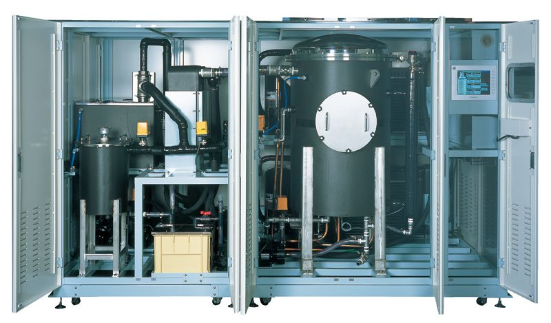
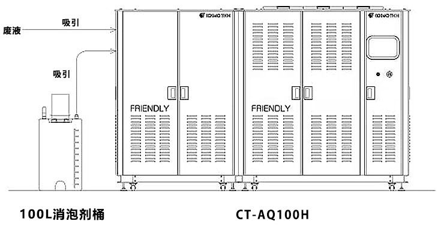
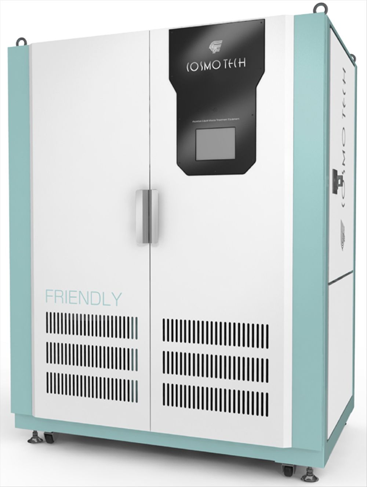
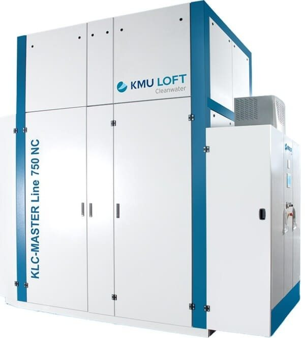
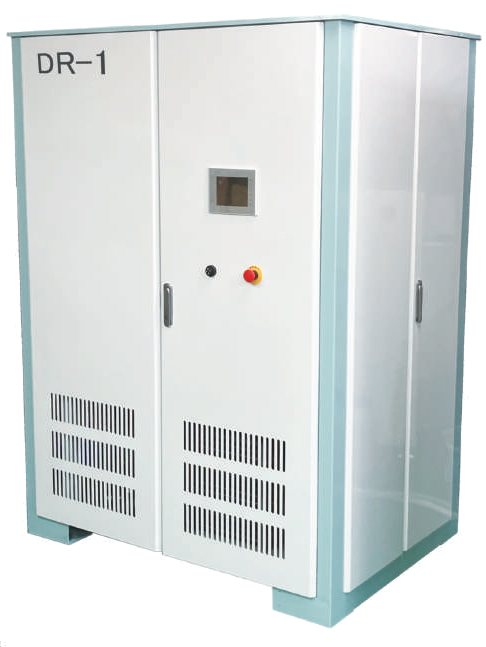

FRIENDLY CT-AQ100H / 125HWater-Soluble Waste Fluid Treatment System
FRIENDLY CT-AQ100H / 125H
Water-Soluble Waste Fluid Treatment SystemHigh-capacity models for plants that generate large volumes of waste fluid
- Treatment capacity
- 100–150 L/h
- Applicable to
- Water-soluble waste fluid
Product Features
- Over 160 units installed
- Proven waste fluid reduction to as little as 1/20 (approx. 95% less)
- Energy-saving design: vacuum distillation × heat pump control
- 4 models by capacity (10 L / 25 L / 100 L / 125 L per hour)
- No auxiliary equipment needed (boiler, cooling water system, compressed air, etc.)
- 24-hour continuous operation / automatic vessel cleaning
Benefits
- Lower industrial waste disposal costs (outsourced disposal and transport)
- Ready for rising disposal fees and stricter environmental regulations
- In-house waste fluid treatment for more stable costs
- Less waste fluid to store, less storage space
FAQ
Q1Which waste fluids can it treat?
Water-soluble waste fluids consisting mainly of water, such as spent cutting fluid, spent cleaning fluid and plating process waste fluid. Suitability varies with the type and concentration of the waste fluid, so we recommend running a treatment test first.
Q2What treatment method does it use?
It uses "vacuum distillation": the concentration tank inside the unit is depressurized so the waste fluid is distilled and separated at low temperatures below 40 °C. A refrigeration-type heat pump keeps power consumption low, and no auxiliary equipment such as a boiler, cooling water system or compressed air is needed, helping to lower installation and running costs.
Q3What happens to the reclaimed water?
Reclaimed water distilled from the waste fluid can be reused for cleaning or dilution as your site requires, or discharged to the sewer if it meets local discharge standards.
Specifications
| Model | CT-AQ10H | CT-AQ25H | CT-AQ100H | CT-AQ125H |
|---|---|---|---|---|
| Treatment capacity (per hour) | 10 L | 25 L | 100 L | 125–150 L |
| Applicable waste fluids | Water-soluble waste fluid | |||
| Control method | Indirect heat pump type | |||
| Power supply | 3-phase 200V 50/60Hz | |||
| Electrical capacity / current | Approx. 5.2 kVA / 14.8 A | Approx. 13.8 kVA / 40 A | Approx. 34.7 kVA / 100 A | Approx. 55.6 kVA / 160 A |
| Input breaker | 30A | 75A | 125A | 175A |
| Weight (in operation) | Approx. 260 kg (approx. 320 kg) | Approx. 585 kg (approx. 825 kg) | Approx. 1,660 kg (approx. 2,070 kg) | Approx. 1,800 kg (approx. 2,105 kg) |
| Dimensions (mm) | W800×D1000×H1430 | W1500×D1052×H1900 | W3100×D1600×H1900 (2 units) W1800 / W1300 | W3100×D1600×H1940 (2 units) W1800 / W1300 |
Swipe sideways to see the full table
※ Specifications and appearance are subject to change for improvement without notice. For other specifications, please contact Yuan Hua.
More details
- Treatment capacity raised to 100 L/h to meet the needs of high-volume users.
- A high concentration ratio greatly cuts waste fluid treatment costs.
- A new system design handles all kinds of water-soluble waste fluids.
- Can run unattended 24 hours a day in continuous automatic operation.
- Automatic cleaning, a touch panel and more make operation simple.
Source: CosmoTech (cosmotech-jp)
Drastically reduces waste fluid discharge
In the past, waste fluid from production plants was handed straight to waste treatment contractors.
Adopting FRIENDLY greatly reduces the volume of waste fluid and, with it, your costs.

Concentration capability for water-soluble waste fluids

※ The concentration ratio of water-soluble waste fluid varies with the proportions of its components.
System configuration (standard specifications)


Other Distributed Models

01Popular ModelWater-Soluble Waste Fluid Treatment SystemFRIENDLY CT-AQ25H
- Treatment capacity
- 25 L/h
- Applicable to
- Water-soluble waste fluid

03Large-Scale MVR Waste Fluid Treatment SystemMASTER Line
- Treatment capacity
- Up to 3,850 L/h
- Applicable to
- All water-soluble waste fluids

04Distillation Waste Fluid Recovery & Reuse SystemDR-1
- Treatment capacity
- Up to 10.5 L/h
- Applicable to
- Plating waste fluid
Evaluating waste fluid reduction?Start by telling us your situation
- Roughly how much waste fluid do you generate per month?
- Type of waste fluid: cutting fluid, cleaning wastewater, plating waste fluid or something else?
Share the type and volume of waste fluid you generate and how you treat it now, and the Yuan Hua team will help evaluate suitable equipment and how to implement it.
Yuan Hua Oil Co., Ltd.
- Tel
- 04-2335-5559
- Fax
- 04-2335-8886
- Hours
- Mon–Fri 08:00 – 17:00